Genearlized Linear Models
A Generalized Outline
- Why use GLMs? An Intro to Entropy
- Logistic Regression Verus Linear Regression
- Generalized Linear Models
- Poisson Regression (Poisson Error, Long Link)
What is Maximum Entropy?

Maximum Entropy Principle
-McElreath 2017
Why are we thinking about MaxEnt?
- MaxEnt distributions have the widest spread - conservative
- Nature tends to favor maximum entropy distributions
- It’s just natural probability
- It’s just natural probability
- The foundation of Generalized Linear ModelDistributions
- Leads to useful distributions once we impose constraints


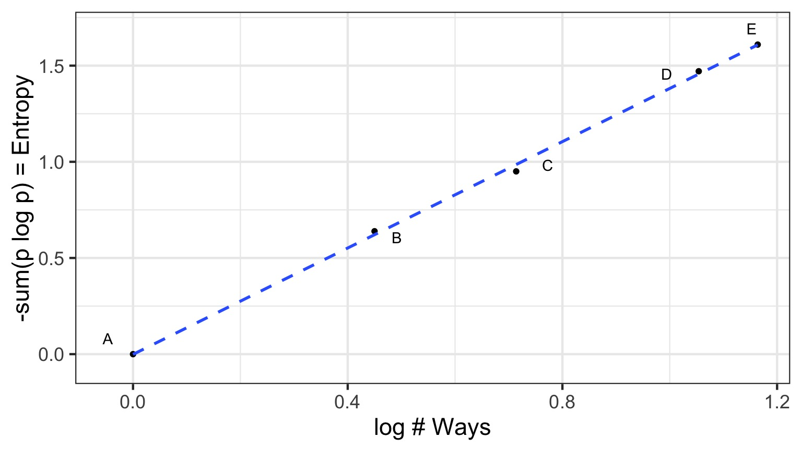
Information Entropy
\[H(p) = - \sum p_i log \, p_i\]
- Measure of uncertainty
- If more events possible, it increases
- Nature finds the distribution with the largest entropy, given constraints of distribution
Maximum Entropy and Coin Flips
- Let’s say you are flipping a fair (p=0.5) coin twice
- What is the maximum entropy distribution of # Heads?
- Possible Outcomes: TT, HT, TH, HH
- which leads to 0, 1, 2 heads
- which leads to 0, 1, 2 heads
- Constraint is, with p=0.5, the average outcome is 1 heads
The Binomial Possibilities
TT = p2HT = p(1-p)
TH = (1-p)p
HH = p2
Let’s compareother distributions meeting constraint using Entropy
Remember, we must average 1 Heads, so,
sum(distribution * 0,1,1,2) = 1
\[H = - \sum{p_i log p_i}\]
| Distribution | TT, HT, TH, HH | Entropy |
|---|---|---|
| Binomial | 1/4, 1/4, 1/4, 1/4 | 1.386 |
| Candiate 1 | 2/6, 1/6, 1/6, 2/6 | 1.33 |
| Candiate 2 | 1/6, 2/6, 2/6, 1/6 | 1.33 |
| Candiate 3 | 1/8, 1/2, 1/8, 2/8 | 1.213 |
What about other p’s and draws?
Assume 2 draws, p=0.7, make 1000 simulated distributions 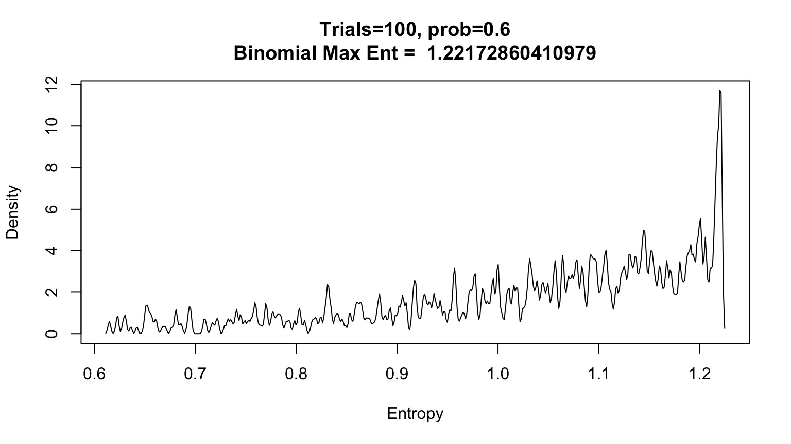
OK, what about the Gaussian?
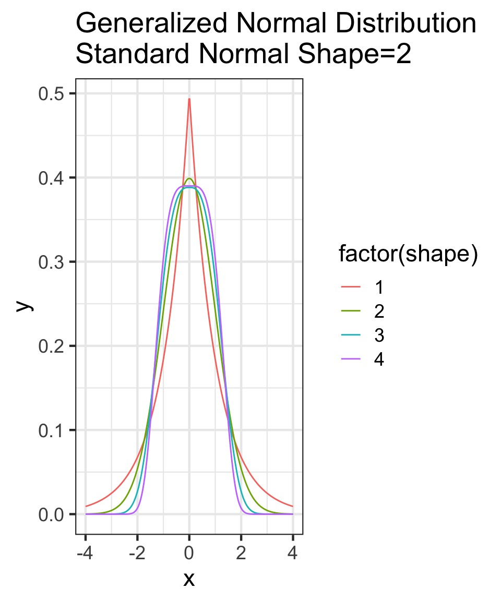
- Constraints: mean, finite variance, unbounded
- Lots of possible distributions for normal processes
- Flattest distribution given constraints: MaxEnt
Maximum Entropy Distributions
| Constraints | Maxent distribution |
|---|---|
| Real value in interval | Uniform |
| Real value, finite variance | Gaussian |
| Binary events, fixed probability | Binomial |
| Non-negative real, has mean | Exponential |
How Distributions are Coupled

A Generalized Outline
- Why use GLMs? An Intro to Entropy
- Logistic Regression Verus Linear Regression
- Generalized Linear Models
- Poisson Regression (Poisson Error, Long Link)
Infection by Cryptosporidium
Cryptosporidum Infection Rates

This is not linear or gaussian

Why?
The General Linear Model
\[\Large \boldsymbol{Y_i} = \boldsymbol{\beta X_i} + \boldsymbol{\epsilon} \]
\[\Large \epsilon \sim \mathcal{N}(0,\sigma^{2})\]
The General Linear Model
Likelihood:
\[\Large Y_i \sim \mathcal{N}(\hat{Y_i},\sigma^{2})\]
Data Generating Process:
\[\Large \boldsymbol{\hat{Y}_{i}} = \boldsymbol{\beta X_i} \]
The General(ized) Linear Model
Likelihood:
\[\Large Y_i \sim \mathcal{N}(\hat{Y_i},\sigma^{2})\]
Data Generating Process:
- Transformation (Identity Link):
\[\Large \hat{Y}_{i} = \eta_{i} \]
- Linear Equation:
\[\Large \boldsymbol{\eta_{i}} = \boldsymbol{\beta X_i} \]
A Generalized Linear Model with an Exponential Curve
Likelihood:
\[\Large Y_i \sim \mathcal{N}(\hat{Y_i},\sigma^{2})\]
Data Generating Process:
- Transformation (Log Link):
\[\Large Log(\hat{Y}_{i}) = \eta_{i} \]
- Linear Equation:
\[\Large \boldsymbol{\eta_{i}} = \boldsymbol{\beta X_i} \]
Log Link

Isn’t this just a transformation?
Aren’t we just doing \[\Large \boldsymbol{log(Y_{i})} = \boldsymbol{\beta X_i} + \boldsymbol{\epsilon_i}\]Likelihood:
\[\Large Y_i \sim \mathcal{N}(\hat{Y_i},\sigma^{2})\] Error is Normal
Data Generating Process:
- Transformation (Log Link):
\[\Large Log(\hat{Y}_{i}) = \eta_{i} \]
- Linear Equation:
\[\Large \boldsymbol{\eta_{i}} = \boldsymbol{\beta X_i} \]
But This is Not Normal
Binomial Distribution
\[ Y_i \sim B(prob, size) \]
- Discrete Distribution
- prob = probability of something happening (% Infected)
- size = # of discrete trials
- Used for frequency or probability data
- We estimate coefficients that influence prob
So, Y is a Logistic Curve
\[Probability = \frac{1}{1+e^{\beta X}}\]
Generalized Linear Model with a Logit Link
Likelihood: \[\Large Y_i \sim \mathcal{B}(\hat{Y_i}, size)\]
Data Generating Process:
Logit Link Function \[\Large Logit(\hat{Y_i}) = \eta_{i}\]
Linear Function
\[\Large \boldsymbol{\eta_{i}} = \boldsymbol{\beta X_i} \]
Logitistic Regression

Generalized Linear Model with Logit Link
OR, with Success and Failures
Outputs
| LR Chisq | Df | Pr(>Chisq) | |
|---|---|---|---|
| Dose | 233.8357 | 1 | 0 |
And logit coefficients
| term | estimate | std.error | statistic | p.value |
|---|---|---|---|---|
| (Intercept) | -1.4077690 | 0.1484785 | -9.481298 | 0 |
| Dose | 0.0134684 | 0.0010464 | 12.870912 | 0 |
The Odds
\[Odds = \frac{p}{1-p}\]\[Log-Odds = Log\frac{p}{1-p} = logit(p)\]
The Meaning of a Logit Coefficient
Logit Coefficient: A 1 unit increase in a predictor = an increase of \(\beta\) increase in the log-odds of the response.\[\beta = logit(p_2) - logit(p_1)\]
\[\beta = Log\frac{p_1}{1-p_1} - Log\frac{p_2}{1-p_2}\]
We need to know both p1 and \(\beta\) to interpret this.
If p1 = 0.7, \(\beta\) = 0.01347, then p2 = 0.702
But how do we assess assumptions?
- Should still be no fitted v. residual relationship
- But QQ plots lose meaning
- Not a normal distribution
- Mean scales with variance
- Also many types of residuals
- Deviance, Pearson, raw, etc.
Randomized quantile residuals
- If model fits well, quantiles of residuals should be uniformly distributed
- I.E., for any point, if we had its distribution, there should be no bias in its quantile
- We do this via simulation
- Works for many models, and naturally via Bayesian simuation
Randomized quantile residuals: Steps
- Get ~1000 (or more) simulations of model coefficients
- For each response (y) value, create an empirical distribution from the simuations
- For each response, determine it’s quantile from that empirical distribution
- The quantiles of all y values should be uniformly distributed
- QQ plot of a uniform distribution!
- QQ plot of a uniform distribution!
Randomized quantile residuals: Visualize

Randomized quantile residuals: Visualize
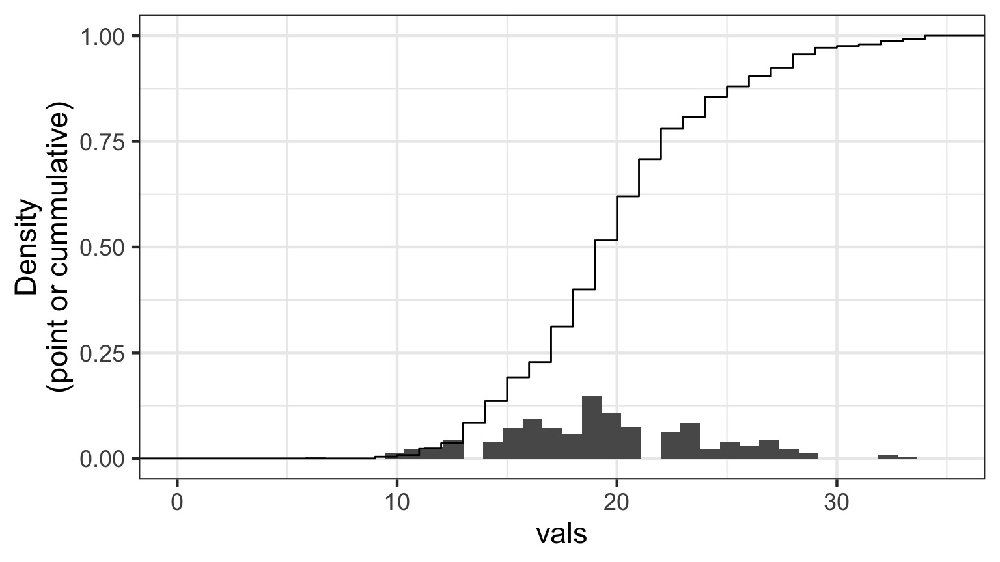
Randomized quantile residuals: Visualize
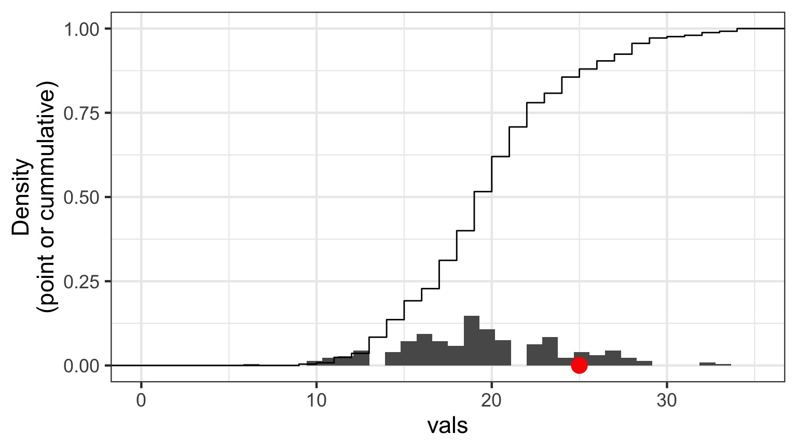
Randomized quantile residuals: Visualize
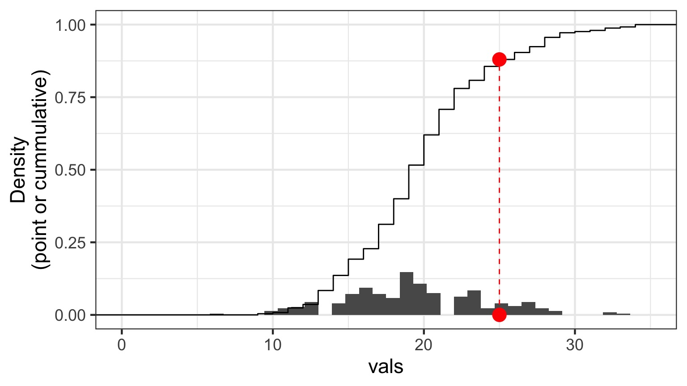
Randomized quantile residuals: Visualize
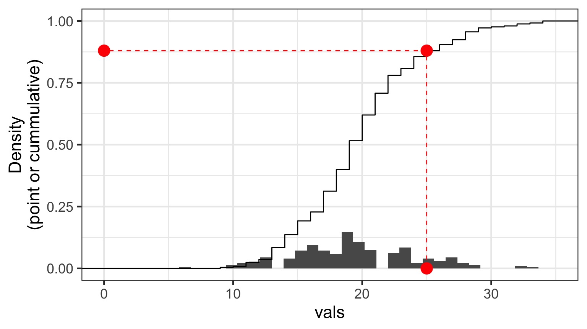
Quantile Residuals
Quantile Residuals
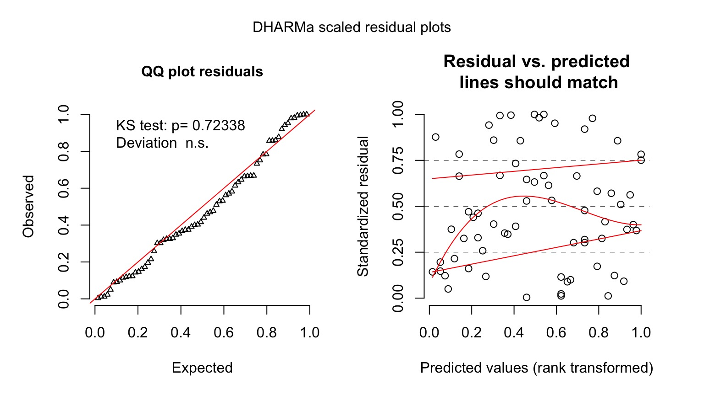
A Generalized Outline
- Why use GLMs? An Intro to Entropy
- Logistic Regression Verus Linear Regression
- Generalized Linear Models
- Poisson Regression (Poisson Error, Long Link)
General Linear Models are a Special Case
Likelihood:
\[\Large Y_i \sim \mathcal{N}(\hat{Y_i},\sigma^{2})\]
Data Generating Process:
- Transformation (Identity Link):
\[\Large \hat{Y}_{i} = \eta_{i} \]
- Linear Equation:
\[\Large \boldsymbol{\eta_{i}} = \boldsymbol{\beta X_i} \] But what if We don’t want a Normal Distribution?
The Generalized Linear Model
Likelihood:
\[\boldsymbol{Y_i} = E(\boldsymbol{\hat{Y_i}}, \theta)\]
E is any distribution from the Exponential Family
\(\theta\) is an error parameter, and can be a function of Y
Data Generating Process:
- Link Function \[\boldsymbol{f(\hat{Y_i})} = \boldsymbol{\eta_i}\]
- Linear Predictor \[\boldsymbol{\eta_i} = \boldsymbol{\beta X}\]
Generalized Linear Models: Link Functions
Basic Premise:
We have a linear predictor, \(\eta_i = a+Bx_i\)
That predictor is linked to the fitted value of \(Y_i\), \(\hat{Y_i}\)
We call this a link function, such that \(g(\hat{Y_i}) = \eta_i\)
For example, for a linear function, \(\mu_i = \eta_i\)
For an exponential function, \(log(\mu_i) = \eta_i\)
Some Common Links
Identity: \(\hat{Y_i} = \eta_i\) - e.g. \(\mu = a + bx\)
Log: \(log(\hat{Y_i}) = \eta_i\) - e.g. \(\mu = e^{a + bx}\)
Logit: \(logit(\hat{Y_i}) = \eta_i\) - e.g. \(\hat{Y_i} = \frac{e^{a + bx}}{1+e^{a + bx}}\)
Inverse: \(\frac{1}{\hat{Y_i}} = \eta_i\) - e.g. \(\hat{Y_i} = (a + bx)^{-1}\)
Generalized Linear Models: Error
Basic Premise:
The error distribution is from the exponential family
- e.g., Normal, Poisson, Binomial, and more.
For these distributions, the variance is a funciton of the fitted value on the curve: \(var(Y_i) = \theta V(\hat{Y_i})\)
For a normal distribution, \(var(Y_i) = \theta*1\) as \(V(\hat{Y_i})=1\)
For a poisson distribution, \(var(Y_i) = 1*\mu_i\) as \(V(\hat{Y_i})=\hat{Y_i}\)
Distributions, Canonical Links, and Dispersion
| Distribution | Canonical Link | Variance Function |
|---|---|---|
| Normal | identity | \(\theta\) |
| Poisson | log | \(\hat{Y_i}\) |
| Binomial | logit | \(\hat{Y_i}(1-\hat{Y_i})\) |
| Negative Binomial | log | \(\mu + \kappa\hat{Y_i}^2\) |
| Gamma | inverse | \(\hat{Y_i}^2\) |
| Inverse Normal | \(1/\hat{Y_i}^2\) | \(\hat{Y_i}^3\) |
The Generalized Linear Model
Likelihood:
\[\boldsymbol{Y_i} = E(\boldsymbol{\hat{Y_i}}, \theta)\]
E is any distribution from the Exponential Family
\(\theta\) is an error parameter, and can be a function of Y
Data Generating Process:
- Link Function \[\boldsymbol{f(\hat{Y_i})} = \boldsymbol{\eta_i}\]
- Linear Predictor \[\boldsymbol{\eta_i} = \boldsymbol{\beta X}\]
A Generalized Outline
- Why use GLMs? An Intro to Entropy
- Logistic Regression Verus Linear Regression
- Generalized Linear Models
- Poisson Regression (Poisson Error, Long Link)
Poisson Regression with a Log Link
Likelihood:
\[\boldsymbol{Y_i} \sim \mathcal{P}(\lambda = \boldsymbol{\hat{Y_i}})\]
Data Generating Process: \[log(\boldsymbol{\hat{Y_i}}) = \boldsymbol{\eta_i}\]
\[\boldsymbol{\eta_i} = \boldsymbol{\beta X_i}\]
What is the relationship between kelp holdfast size and number of fronds?

What About Kelp Holdfasts?

How ’bout dem residuals?

What is our data and error generating process?
What is our data and error generating process?
- Data generating process should be exponential - No values less than 1
- Error generating process should be Poisson - Count data
What is our data and error generating process?
Kelp GLM Results
LR Test
| LR Chisq | Df | Pr(>Chisq) | |
|---|---|---|---|
| HLD_DIAM | 456.6136 | 1 | 0 |
Coefficients:
| term | estimate | std.error | statistic | p.value |
|---|---|---|---|---|
| (Intercept) | 1.778059 | 0.0572585 | 31.05319 | 0 |
| HLD_DIAM | 0.023624 | 0.0010502 | 22.49521 | 0 |
Kelp GLM Results
Kelp GLM Results
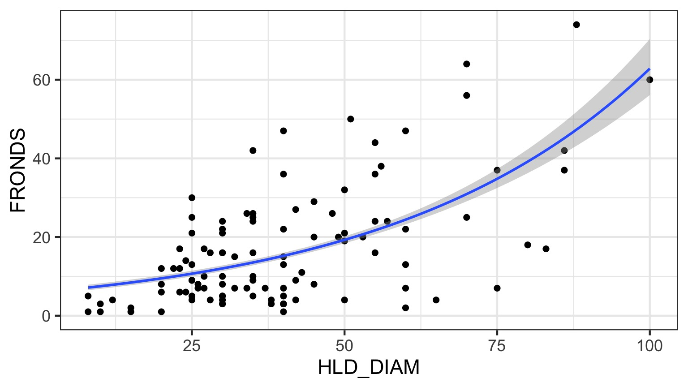
Kelp GLM Quantile Residuals
library(DHARMa)
set.seed(2017)
simulationOutput <- simulateResiduals(kelp_glm,
n = 1000)
plot(simulationOutput)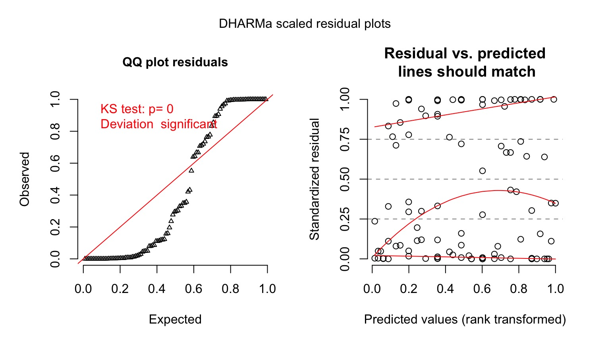
Ruh roh! Overdispersion
- Sometimes, your variance changes faster than predicted by your error distribution
- This is called overdispersion
- We will deal with it more formally next week, but…
- Sometimes, a different error structure will do.
The Negative Binomial
- Related to the binomial (coin flips!)
- Number of failures before size successes are seen given p as the probability of success
- \(Y_i \sim NB(size, p)\)
- Variance = \(\hat{Y_i}^2 + \kappa\hat{Y_i}^2\)|$
- Increases with the square, not linearly
The Negative Binomial
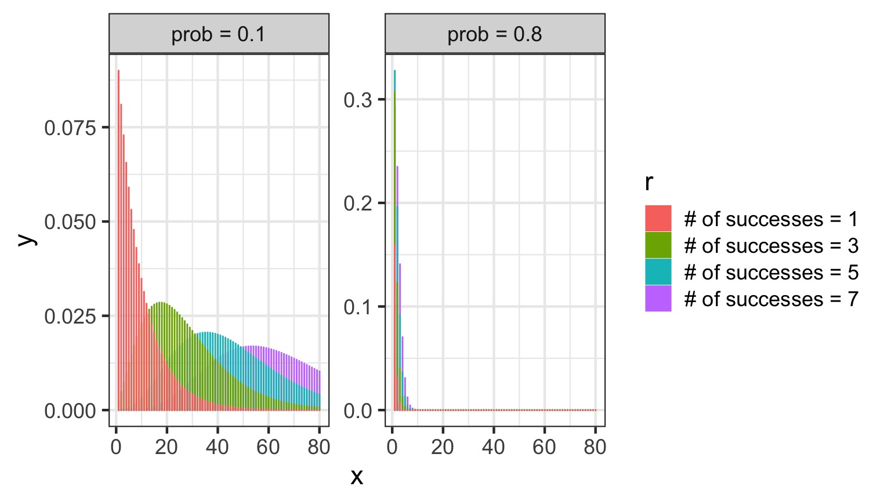
Negative Binomials and Log Links…
- We can also write NBs using means and a dispersion parameter.
- If the mean is \(\mu_i\), then, the variance is: \[var(Y_i) = \mu_i + \mu_i^2/\theta\]
- We call \(\theta\) the dispersion parameters
A Negative Binomial GLM
Likelihood:
\[\boldsymbol{Y_i} \sim NB(\boldsymbol{\hat{Y_i}}, \boldsymbol{\theta})\]
Data Generating Process: \[log(\boldsymbol{\hat{Y_i}}) = \boldsymbol{\eta_i}\]
\[\boldsymbol{\eta_i} = \boldsymbol{\beta X_i}\]
A Negative Binomial GLM
Analysis of Deviance Table (Type II tests)
Response: FRONDS
LR Chisq Df Pr(>Chisq)
HLD_DIAM 51.145 1 8.578e-13 ***
---
Signif. codes: 0 '***' 0.001 '**' 0.01 '*' 0.05 '.' 0.1 ' ' 1Kelp NB GLM Results
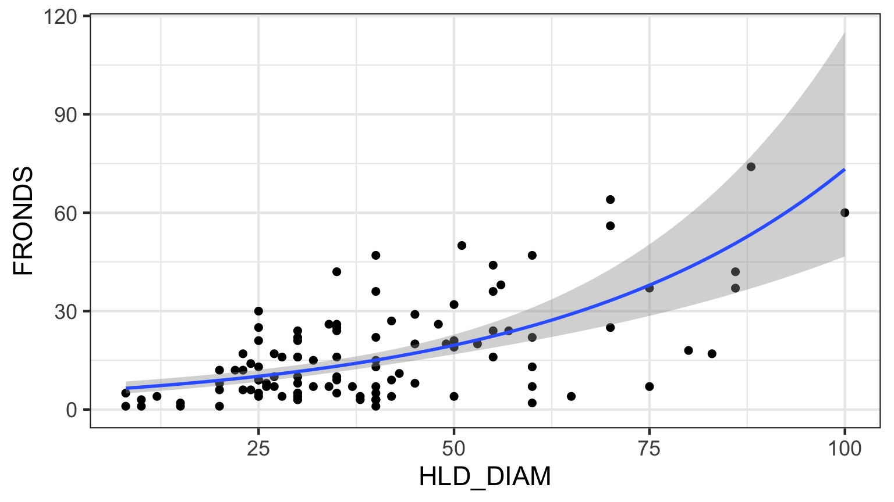
Kelp NB GLM Checks
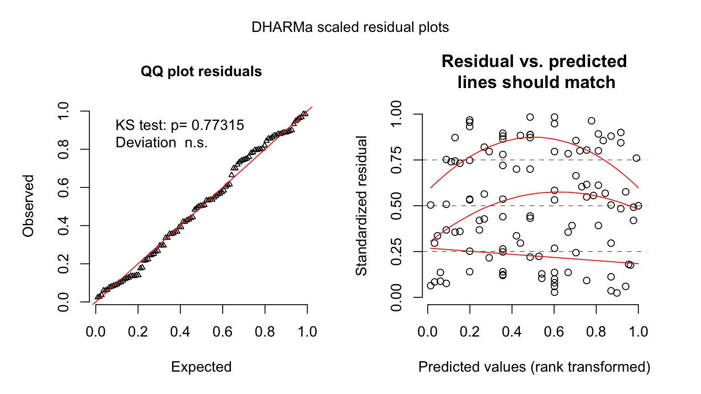
You Try: Wolf Inbreeding and Litter Size
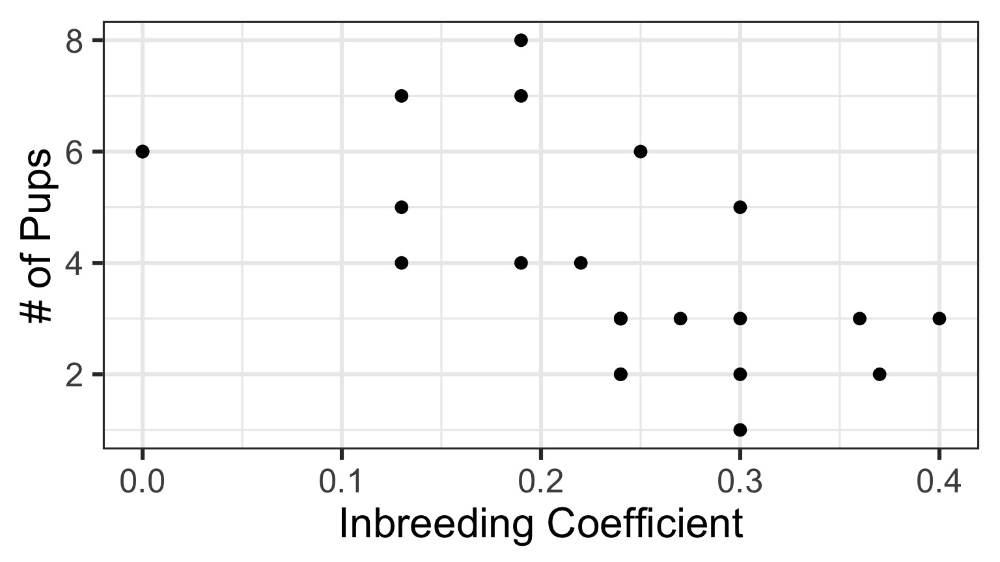